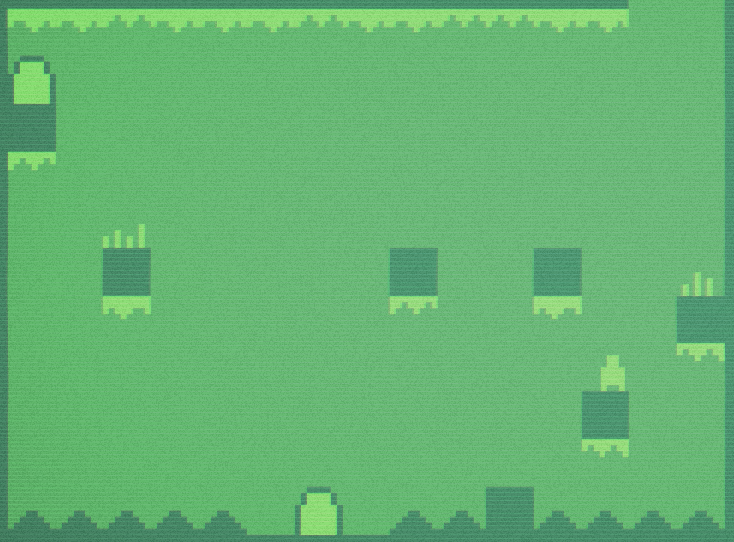
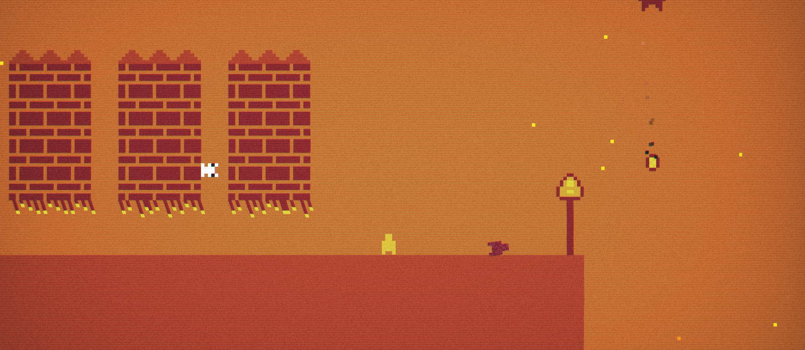
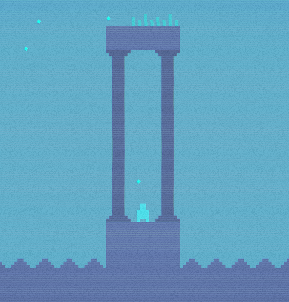

Sinopsis
> Un día del 2032 el amigo de Mark, nuestro protagonista, desaparece y Mark se encarga de buscarlo. Luego de 3 años, en el 2035, Mark descubre que su amigo creó una simulación con ayuda de una empresa fantasma de refrescos para experimentar con personas y "salvarlos" del desorden del país. Allí Mark encuentra la ubicación de la simulación y decide entrar para encontrar a su amigo y saber qué está pasando.
Fotos




Requisitos
Requisitos mínimos 30FPS
> CPU: Dual‑Core 2.0 GHz (Pentium / Athlon)
> 500 MB de RAM
> 50 MB de VRAM
> 50 MB de espacio en disco
> Windows 7 o mayor, o navegador común
Requisitos recomendados +60FPS
> CPU: Core i3/i5 o Ryzen 3 (2.5 GHz+)
> +1 GB de RAM
> 100 MB de VRAM
> 100 MB de espacio vacío en disco
> Windows 10 o mayor, o navegador común
Descargas
> pagina de protocol 0, itch.io, (descargas al fondo)
> jugar protocol 0 desde web, itch.io